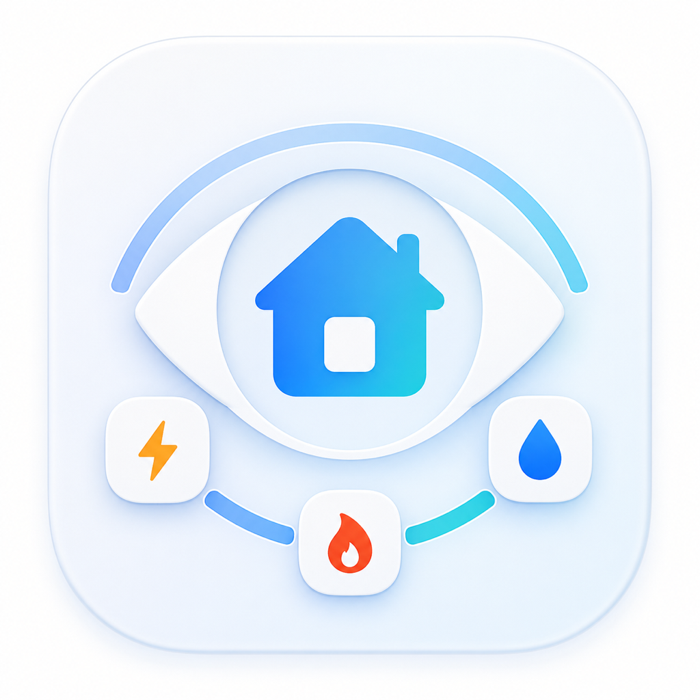
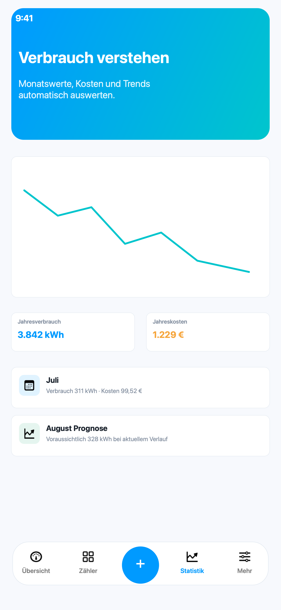
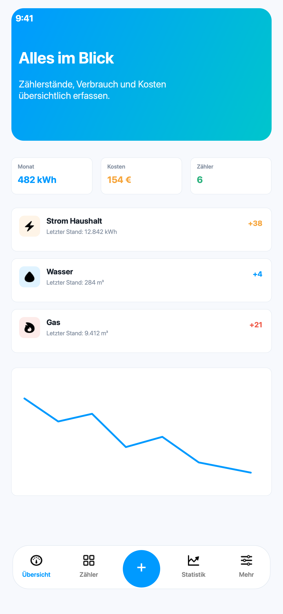
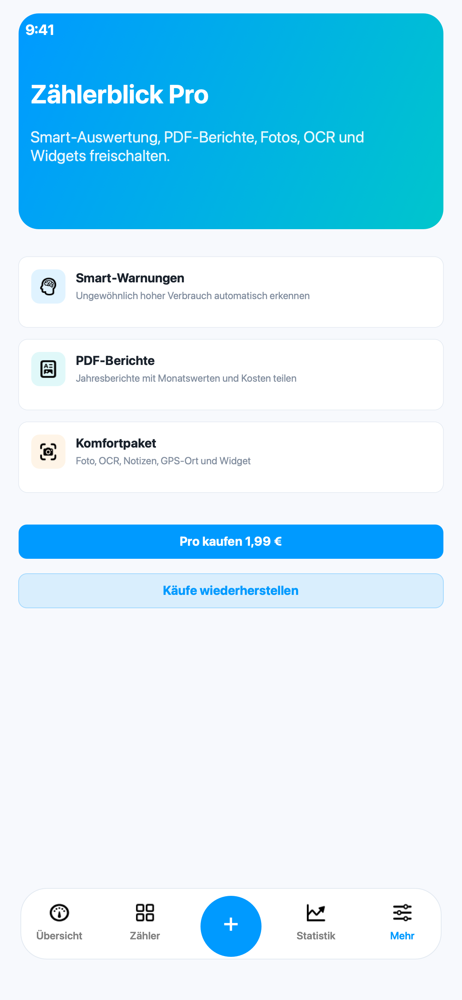
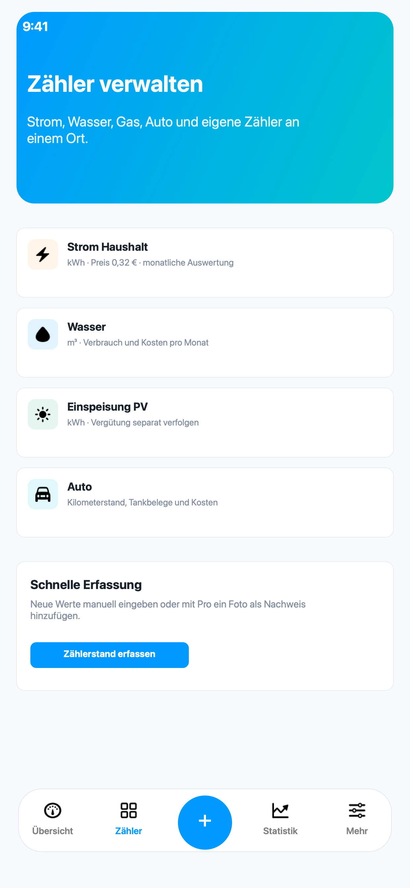
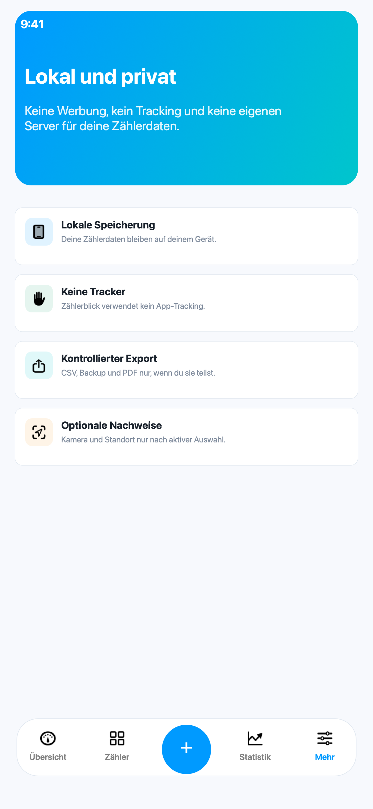

Zähler strukturiert verwalten
Erfasse unterschiedliche Zählertypen mit Einheit, Kostenbasis, Notizen und aktuellem Stand in einer klaren Übersicht.

ZählerblickZählerdokumentation für iPhone
Zählerblick unterstützt private Haushalte, Vermieter und Selbstständige bei der strukturierten Erfassung von Strom, Wasser, Gas, Fahrzeugständen und individuellen Messwerten.



Funktionen
Erfasse unterschiedliche Zählertypen mit Einheit, Kostenbasis, Notizen und aktuellem Stand in einer klaren Übersicht.
Monatswerte, Diagramme und Prognosen zeigen Entwicklungen, Schwankungen und relevante Kostenverläufe.
Fotos, Belegnotizen, OCR und optionale Standortangaben machen Ablesungen später prüfbar und nachvollziehbar.
CSV-Dateien, Backups und PDF-Berichte helfen bei Übergaben, Abrechnungen und der langfristigen Dokumentation.
App-Einblicke


Zählerblick Pro
Zählerblick Pro ergänzt die tägliche Erfassung um professionelle Export- und Komfortfunktionen für wiederkehrende Dokumentation.
Datenschutz
Zählerblick betreibt keinen eigenen Server für deine Zählerdaten, verkauft keine Daten und nutzt kein App-Tracking.
Datenschutzerklärung lesenFür Fragen zur App, zu Exporten oder zu Zählerblick Pro steht direkter E-Mail-Support zur Verfügung.
Support öffnen